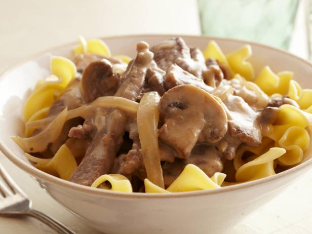

Beef stroganoff

Directions
You've just completed :
none
- 1. Sprinkle the steak strips with House Seasoning to lightly cover them
- 2. Dust the with steak strips with flour
- 3. In a large skillet, quickly brown them on both sides in the olive oil and butter
- 4. Remove the steak from the pan
- 5. Add the onion slices and mushrooms to the pan drippings
- 6. Saute for a few minutes, until the onion is tender
- 7. Sprinkle with 1 teaspoon flour
- 8. Put the steak back into the pan with the onion and mushrooms
- 9. Add the mushroom soup and beef broth
- 10. Cook over low heat for about 30 minutes ,covered
- 11. Adjust seasoning to taste, adding salt and pepper, as needed
- 12. Stir in the sour cream the last few minutes, right before you serve
- 13. Serve over cooked noodles
House Seasoning
Ingredients : 1 cup salt, 1/4 cup black pepper, 1/4 cup garlic powder
Directions : Mix the ingredients together and store in an airtight container
for up to 6 months. Yields: 1 1/2 cups
Recipe courtesy of Paula Deen, 2008 Read more at: http://www.foodnetwork.com/recipes/paula-deen/beef-stroganoff-recipe.html?oc=linkback